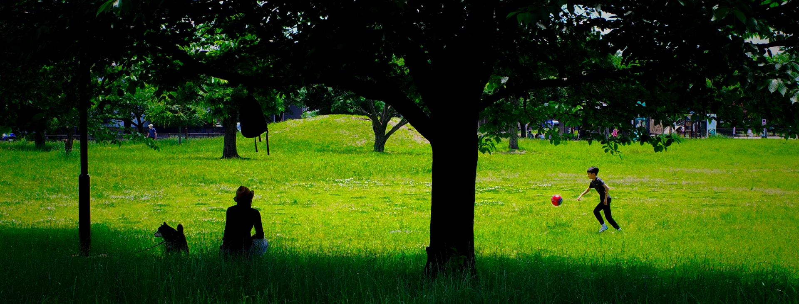
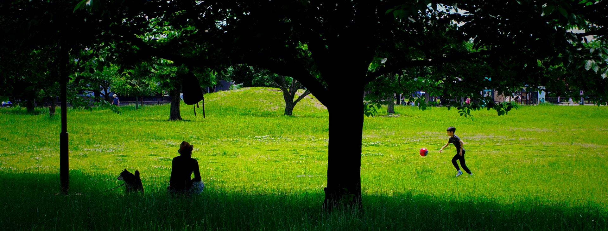
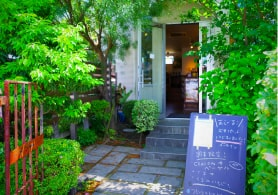

武蔵藤沢駅徒歩最短8分、小学校まで徒歩2分。
都心へのアクセス性に優れ、時間が穏やかに流れる場所。

さぁ、ワンダフルな暮らしを！
入間市、武蔵藤沢エリア。
ここは、近年の区画整理事業により利便性が充実した地域であり、同時に良質な住宅地として生まれ変わった場所です。
大きな公園、スーパーやドラッグストア、レストランや活気ある個人店が多いのが特徴ですが、
その反面、閑静な住宅地が広がり、暮らしやすさに満ち溢れていると言っても過言ではありません。
特に分譲地のほぼ正面には、藤沢東小学校が位置しており、
小学生のお子様がいらっしゃる親御さんには安心の環境と云えるでしょう。
毎日を快適に、そして安心して過ごせる7家族のためのステージ。
ご家族のワンダフルな一歩を、ここ入間市武蔵藤沢の地でスタートしてはいかがでしょうか。
子育て世代におススメ！
-

入間市立藤沢東小学校 徒歩1～2分
大きな空の下で、閑静な住宅地の中心に位置。
同校の伝統は「あいさつ運動」。 -

西武池袋線武蔵藤沢駅 徒歩8～9分
2008年に新駅舎に。ロータリーも整備され、美しい景観が魅力です。
-
家族の願いを叶える
ZEH水準の注文住宅。住協グループの家は、自由設計。あんな間取りの家に住みたい、こんなデザインの家に住みたい、夫婦の憩いの場が欲しい、ウッドデッキが欲しい等、あなただけの専属の設計士が、夢を叶えるお手伝いをいたします。
住協グループの家は、自由設計。専属の設計士が、夢を叶えるお手伝いをいたします。
※イメージ
-
良質な住環境と、
毎日の利便性が共存。武蔵藤沢は、多くの買い物施設で充実しながらも、快適で良質な住環境が広がるエリア。暮らしやすさという面では子育て世代にも、勿論子育てを終えた世代にも自信を持っておススメできる永住地であると云えます。
武蔵藤沢は、多くの買い物施設で充実しながらも、快適で良質な住環境が広がるエリア。

※再開発エリアである西口大通り
-
子どもを中心とした
コミュニティ形成新しくスタートする7の街区だから、子どもを中心にコミュニティが形成されやすい特徴があります。「引っ越したけど近所に馴染めない」といった悩みがも少なく、ストレスのない新生活が期待できます。
新しくスタートする7の街区だから、子どもを中心にコミュニティが形成されやすい特徴があります。

※イメージ


設計士からのメッセージ
住協建設株式会社
設計部設計課 高橋 真人
Masato Takahashi
私の設計士としてのモットーは、お客様の意向をヒアリングし『同じ家族の一員になったつもりで、自分も一緒に住んでいるイメージをしながら』提案をする事です。そうすると不思議なもので、ご家族の願う暮らしのイメージや、今の暮らしの課題や問題点等が自然に見えてくるのです。深くお客様を知り、問題点を共有し、寄り添うことで、お客様の理想とする暮らしを実現する事が我々住協グループ設計士の仕事。我々一人ひとりの設計士は、絶えずあらゆる情報を共有し、感性と技術を磨き続けている事も強みであると言えます。当然、「グランシア入間武蔵藤沢」においても、7家族に寄り添い、丁寧な設計を行います。
Equipment, Specifications
家づくりを、もっと楽しく、もっと快適に。
年間600棟の建築を誇る住協グループのスケールメリットを最大限に活かした、
ハイクオリティな設備・仕様が充実！
-
特に拘りたい水回りは、
使い勝手やデザイン性の高い設備を
取り備えています。クオリティの高い様々なブランドの設備を
お客様の思うままに導入できます。
システムキッチン
毎日利用するキッチンは、信頼の3ブランドよりセレクト可！
システムバス
性能、デザイン性に拘った2ブランドよりセレクト可！
Life infomation
外食も、買い物も、公園も。医療機関も、行政機関も、教育機関も。
半径約1.5Km以内にあらゆる施設があり、快適な暮らしを実現できる武蔵藤沢が暮らしの舞台です。
-
1. 藤沢中央公園 407m～467m 徒歩6分
-
2. 武蔵藤沢駅 638m～698m 徒歩8～9分
-
3. 藤沢東小学校 163m～223m 徒歩2～3分
-
グリーンガーデン 武蔵藤沢店
653~713m 徒歩8～9分 -
TAIRAYA 武蔵藤沢店
504～564m 徒歩7～8分 -

ヤオコー 入間下藤沢店
809～869m 徒歩11分 -
カワチ薬品 入間店
644～704m 徒歩9分 -
ビッグボーイ 入間藤沢店
443～503m 徒歩6～7分 -
モスバーガー 武蔵藤沢店
684～744m 徒歩9～10分 -
HottoMotto 入間下藤沢店
510～570m 徒歩7～8分 -
牛角 入間武蔵藤沢店
448～508m 徒歩6～7分 -
Miles Away ハンバーガーのお店
464～524m 徒歩6～7分 -

cake&cafe CHALON カフェ
507～567m 徒歩7～8分 -
Ksデンキ 入間店
841～901m 徒歩11～12分 -
埼玉りそな銀行 武蔵藤沢支店
461～521m 徒歩6～7分

Access
発展を続ける所沢駅まで15分、池袋駅まで40分。
副都心線乗り入れで、主要都市へ軽快に移動できます。
-
池袋駅まで40分（34分）
-

新宿三丁目駅まで54分（44分）
-
渋谷駅まで59分（50分）
-
みなとみらい駅まで100分（83分）
-
銀座一丁目駅まで73分（63分）
-
市ヶ谷駅まで62分（53分）
上記掲載の電車所要時間は通勤時7：30～9：30に到着する電車を表記しております。（Yahoo！路線情報2023年4月号） （）内部については日中時9：30～16：30に到着する電車を表記しております。乗換、待ち時間は含まれません。 ※池袋駅へは西武池袋線準急利用。ひばりヶ丘駅で急行に乗り換え。 ※新宿三丁目駅へは西武池袋線快速を利用。練馬駅で西武有楽町線準急に乗り換え、小竹向井原駅より東京メトロ副都心線急行を利用。（乗換不要） ※渋谷駅へは西武池袋線快速を利用。練馬駅で西武有楽町線準急に乗り換え、Fライナー元町中華街行きに乗り換え。 ※みなとみらい駅へは西武池袋線を利用。ひばりヶ丘駅で西武池袋線快速急行Fライナー元町・中華街行きに乗り換え。 ※銀座一丁目駅へは西武池袋線快速を利用。池袋駅で東京メトロ有楽町線新木場行に乗り換え。 ※市ヶ谷駅へはひばりが丘駅で西武池袋線快速急行に乗り換え、小竹向原駅で東京メトロ有楽町線新木場行きに乗り換え。